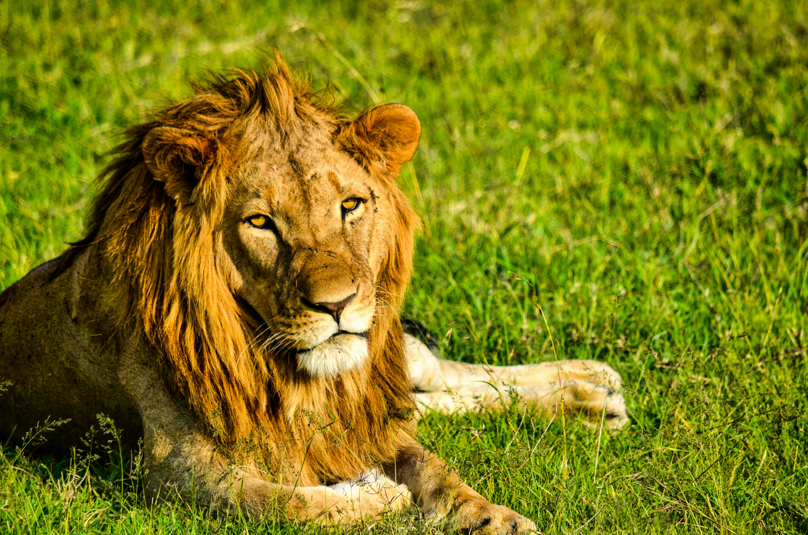
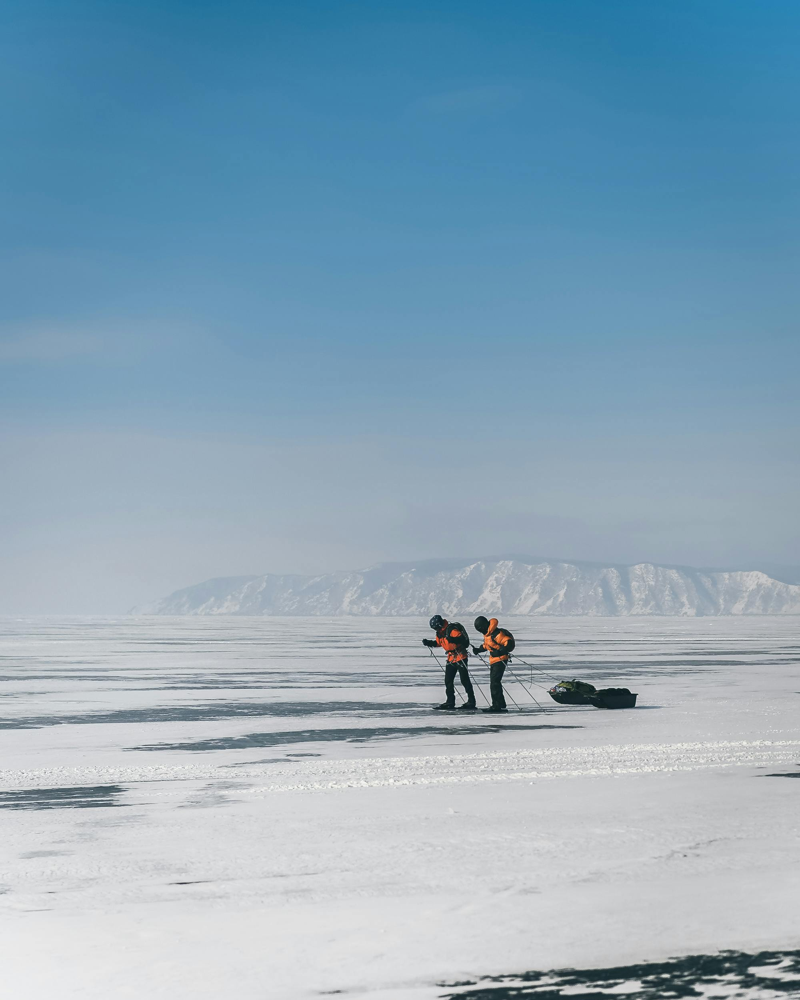
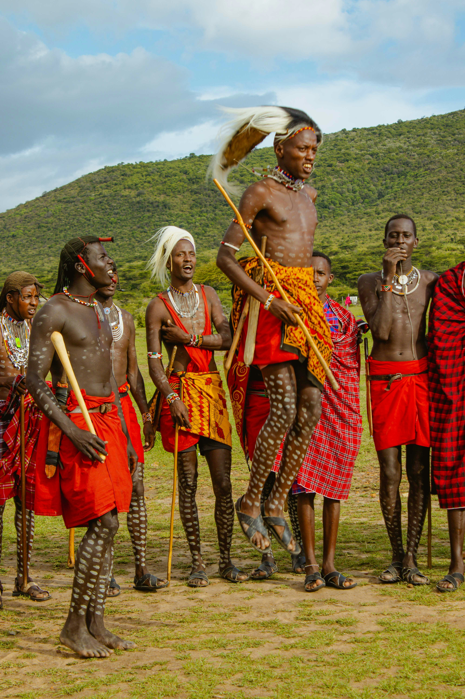

Why Visit Kenya?
Kenya is one of Africa’s top travel destinations, known for its world-class safaris, diverse landscapes, and rich cultural heritage. From the rolling savannahs of the Maasai Mara to the turquoise beaches of the Indian Ocean, Kenya offers something for every traveler.
Top Cities for Tourism
- Nairobi – The capital, a vibrant city blending modern life with wildlife (visit Nairobi National Park and Giraffe Centre).
- Mombasa – Coastal city famous for white sand beaches, Swahili culture, and Fort Jesus.
- Naivasha – A peaceful town with Lake Naivasha, Crescent Island, and Hell’s Gate National Park.
- Nakuru – Known for flamingos, rhinos, and Lake Nakuru National Park.
- Kisumu – Located near Lake Victoria, with hippo spotting and local culture experiences.
Best Places to Visit by Region

Southwest (Rift Valley):
Maasai Mara, Lake Nakuru, Lake Naivasha, Hell’s Gate

Coast:
Diani Beach, Watamu, Malindi, Lamu, Mombasa

Central Highlands:
Mount Kenya, Aberdare, Nanyuki

South:
Amboseli National Park (Kilimanjaro backdrop)
Southeast:
Tsavo East & West National Parks

Western Kenya:
Kakamega Forest, Kisumu, Lake Victoria
When to Go:
Kenya offers unforgettable experiences all year round. Here’s a guide to what’s best each month—from safaris to beaches, cultural festivals to hiking adventures.
Beach time in Diani, great birdwatching at Lake Nakuru.
Peak wildlife viewing in Maasai Mara, flamingos in Lake Bogoria.
Warm coastal getaways before the rains, cultural tours in Nairobi.
Green season begins, fewer tourists—visit Kakamega Forest or Mount Elgon.
Lush landscapes, quieter parks, great for photography in Aberdare.
Clear skies, good time for Mount Kenya hikes or Amboseli elephants.
Start of Great Migration in Maasai Mara, dry season safaris.
Peak safari time, visit Samburu or Lake Naivasha too.
Migration still ongoing, amazing views and fewer crowds.
Last of the dry season—perfect for Tsavo safaris.
Short rains begin, but excellent birdwatching at Lake Victoria.
Festive season at the coast, snorkeling in Watamu or Lamu.